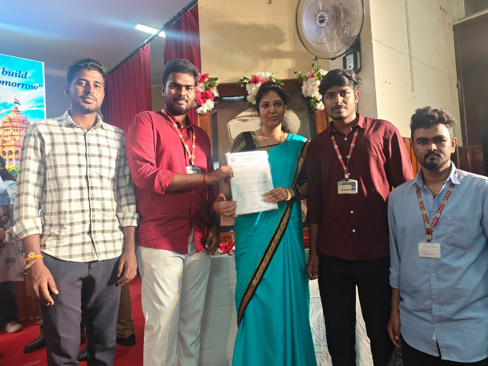
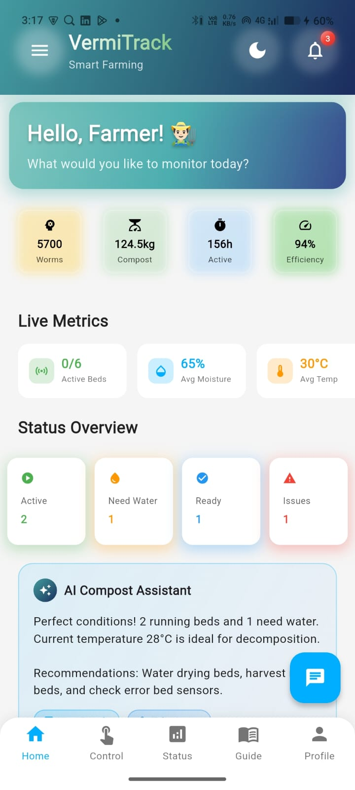
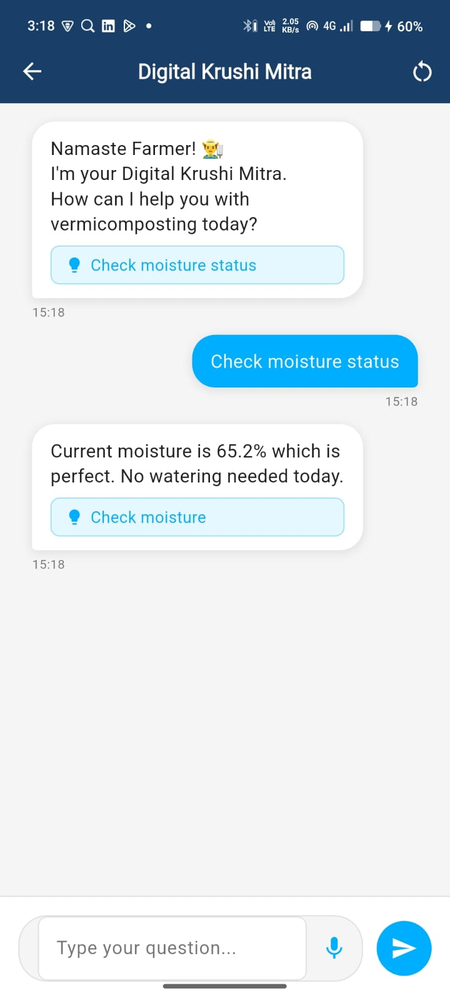
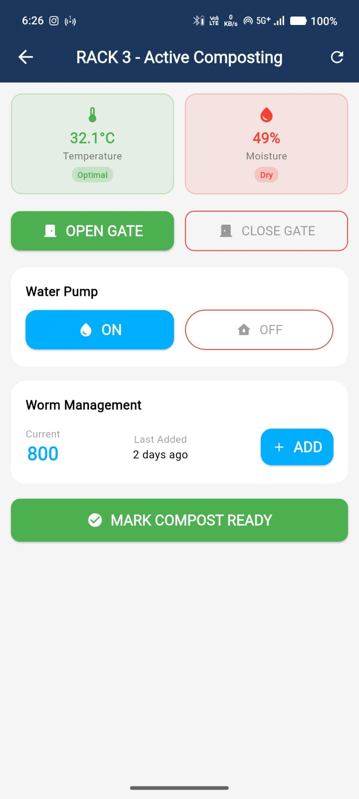
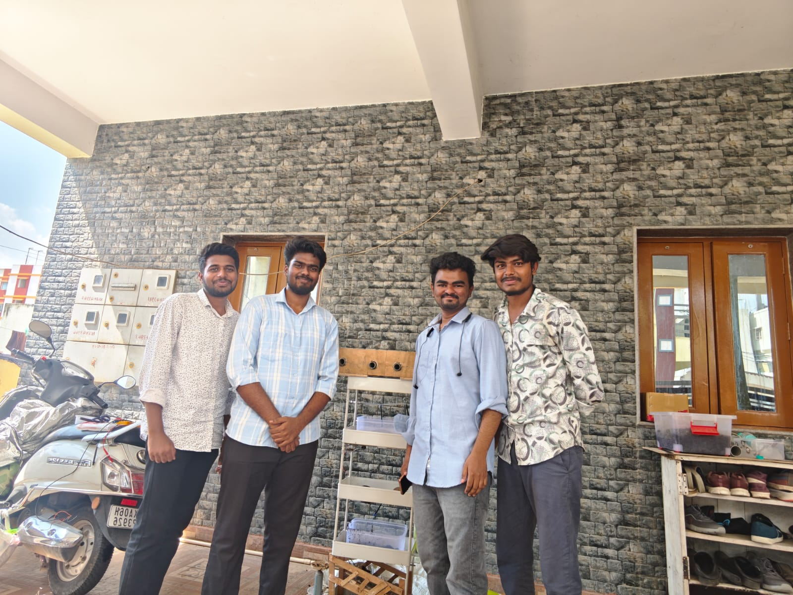

A full-stack IoT system that brings real-time sensing, automated control, and an AI assistant to vermicomposting — built for farmers, showcased at SIH.

Vermicomposting is sensitive — moisture, temperature, and worm activity need constant attention. Manual monitoring is unreliable and labor-intensive.
VermiTrack solves this with a real-time IoT stack: sensors stream live metrics to a Flutter mobile app, which auto-controls water pumps and gate actuators. An integrated AI Compost Assistant ("Digital Krushi Mitra") guides farmers in plain language — no technical knowledge required.
VermiTrack was awarded at IEI and showcased at Smart India Hackathon (SIH), the Techno Exhibition, and the Aikyam IPR Event at RVITM.
Real-time temperature, moisture, active beds, and worm counts streamed from sensors.
Water pump auto-triggers when moisture drops below threshold.
Open/close rack gates remotely to regulate airflow and temperature.
Chatbot ("Digital Krushi Mitra") answers farmer queries in natural language.
Track worm additions, current count, and last-added timestamps.
Mark compost ready when conditions are optimal.
Click any screenshot to view it full-size.



Watch how sensors feed live data into the app, auto-control the water pump, and trigger AI guidance.
Sensors → edge controller → cloud backend → mobile app, with an AI layer on top.
From prototyping in the lab to field deployments — a collaborative effort across hardware, firmware, and app development.
